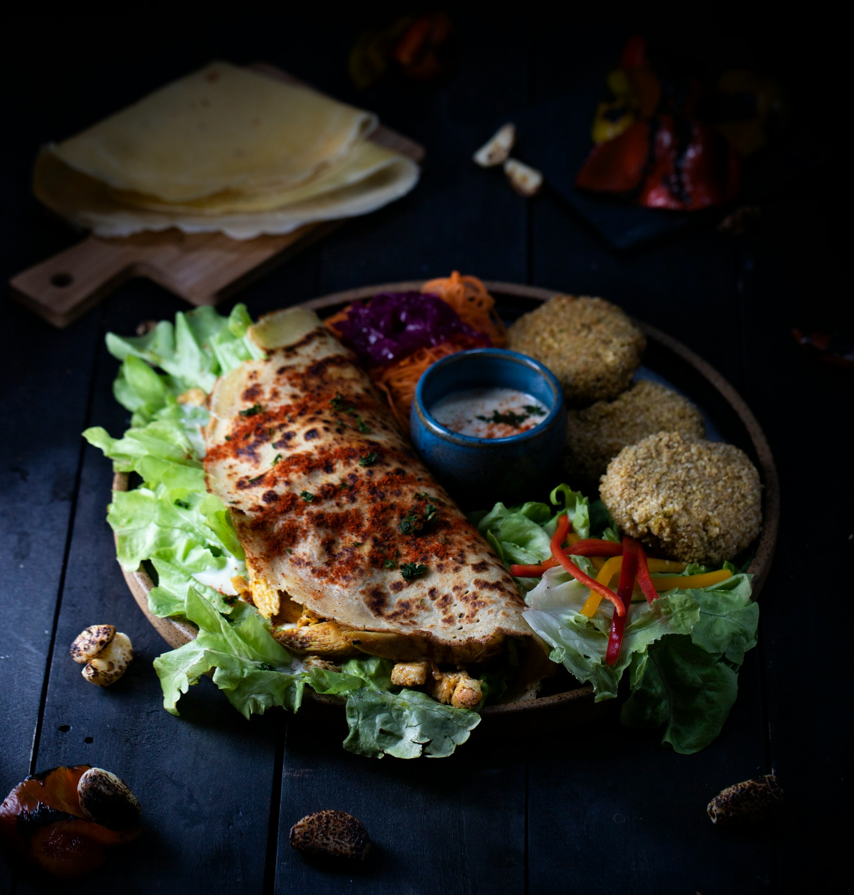

Vad du stoppar i dig under dagen har en direkt effekt på hur du sover när mörkret faller. Koffein har en lång halveringstid och kan stanna kvar i systemet i många timmar, vilket gör att även en kopp kaffe på eftermiddagen kan sabotera djupsömnen senare på natten. På samma sätt kan tunga måltider eller alkohol nära läggdags störa kroppens förmåga att vila ordentligt, då matsmältningen kräver energi och alkohol försämrar kvaliteten på drömsömnen. Genom att vara medveten om dina matvanor och prioritera vätska och lättare mål på kvällen ger du kroppen de bästa förutsättningarna för en ostörd natt.
Bild och text Wikipedia